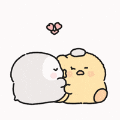

HAAAPPPYYY 20TH SATO CRUSHHBIHHLANGGAABFFLABBLOVEE LEXXXXXXXXXXXX:)
"Here all we get are a few specks of time where everything actually makes sense, and I will cherish those few specks of time with you"
Exactly a year and 8 months, 20 months, 608 days ago, 86 weeks and 6 days, 14,592 hours, 875,520 minutes, 52,531,200 seconds ago, you chose me
You were supposed to be just a happy crush, but in that exact moment you apologized for making me cry, I couldn't help but love you even more, and now look at us, 4 months left 'til our second anniversary. There's still a lot of memories-- arguments, dates, achievements, celebrations-- that are waiting to unfold.
Nag reflect ko, and actually, there really is no need to put an effort in doing or giving something when its our monthsary. I guess waking up and still liking me is enough.
As for me, I just kept doing so (especially in making long messages that is sometimes incoherent) because for me I still feel the need to express more, ironic coming from someone who claims to have an "inability to express", maybe ig that's why I feel eager to tell you more about my thoughts, your impact, how much I love you and pretty much anything about our relationship.
"Why not just say it when we're having a normal conversation? or pag mag deep talks ta?"
Pero bai saon taman, I know this isn't an excuse, but I'm better at writing my thoughts than speaking them. PERO PROMISE, I really am working on speaking my thoughts more, for you. PLUS, I love deep talks when they happen naturally, jsyk. (sorry if late na ingon).
ANYWAYS, WOHOO, hapit na ta 2 years-- and yet we're still on the tip of the iceberg in getting to know more about each other. I really want to know more about you. If mag bulag ta in good terms, realistically, unsa kadugay bago ka mag move on? paunsa ka mag move on? would you try to forget about me? would you erase all your memories of me (if you could like the one in eternal sunshine of a spotless mind)? Would you think about all the bad things about me as an attempt to hate me? What's your favorite movie? What do you think about when you wash the plates? What is that one moment na naka ingon kag "ah, BS bio akong kuhaon na program"?
Hapit na ta 2 years, and still can't get over your impact in my life. You give me reasons to pursue better things.
"If mag nurse ko (blablabla other reasons), tas pag katong mag kuha2 ug dugo kwaan nakog dugo si tanaid"
"Lingaw kagi mag IT, buhatan dayon nako sya ug website every chance I get"
"Psychology my totga, gusto jud nako sya masabatan on a deeper level mehn"
"malibang jud dapat ko at least 3 times a week kay ana biya to sya dati na ana na para healthy"
Before you, I grew onto this independent mindset, I always believed that I dont need anyone's help, and that at the end of the day, I only have myself, and now, because of you, I dont want to go back to who I was before you, and I love you so much for that.
Hapit nata 2 years, and I still love to stare at you when you're not looking. I like finding out more about how you speak, act, and move. I love how you say "hala?" in a high pitched voice when u see something shocking. I love how you talk so fast pag mag story ka na you had to inhale after every sentence.
I love how pag mutindog ka letter V imong tiil, daghan man guro lalaki ga ana pero ikaw mana tas saimo rapud nako napansin. I love how dika maka stand still pag naay kaisturya. Idk why pero I really love staring at the back of your head like naay something about the tinkoy of your hair HAHAHAHAH.
Happy 20 months satoaa gaa, notice how chaotic my letter is and wala syay exact order and pangit kaayog flow HHAHAHA, wala lang, I just decided to write what comes into my mind this time, make it more pure and raw, I love youu biiihhh always in all ways, through ups and downs :)
